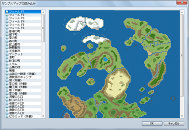

- 新建地图
添加一个新的地图数据。更多相关的信息，请参见地图数据的设置。
- 地图设置
打开地图设置窗口。更多相关的信息，请参见地图数据的设置。
- 读取范例地图 
-
基于已有的范例数据创建新的地图数据。单击列表中的地图名，查看它的内容，然后点击[确定]就可以了。
- 复制
将地图数据复制到剪贴板。
- 粘贴
从剪贴板粘贴地图数据。
- 删除
删除地图数据。
- 整体移动地图
整体移动地图的位置。要确定移动的方向和移动的距离（图块数）。
- 随机生成迷宫
-
自动生成一个迷宫地图。通过确定用于地面和墙壁的图块，你可以迅速得到一个由被廊道连接起来的数个小室组成的迷宫地图。
迷宫会覆盖整个地图，所以如果你想要一个大的迷宫，只需要先创建一个大的地图。如果地图太小，自动生成迷宫的效果不是很好。